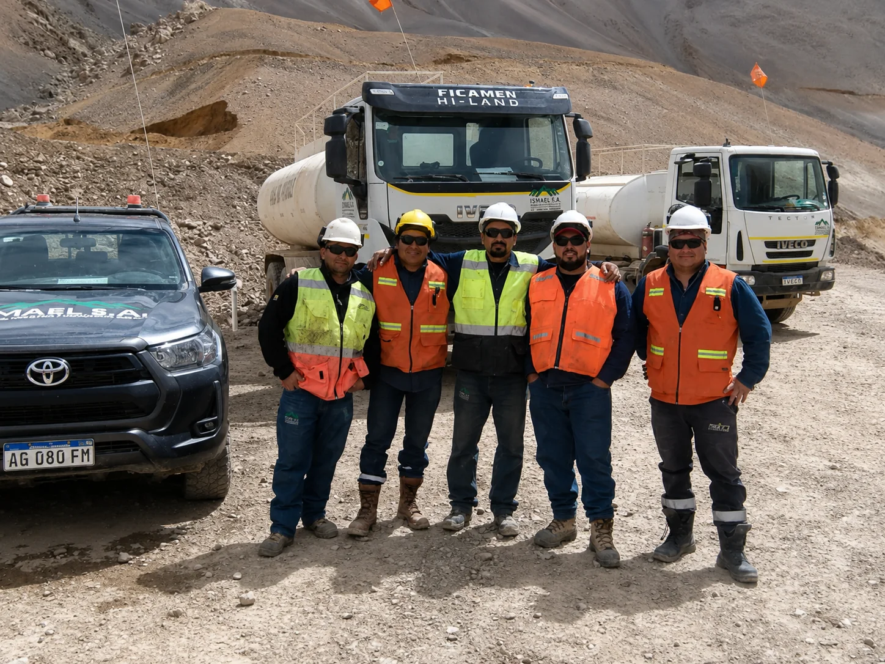
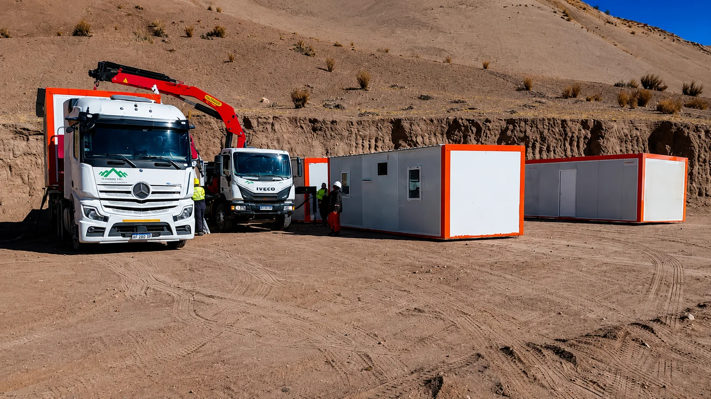
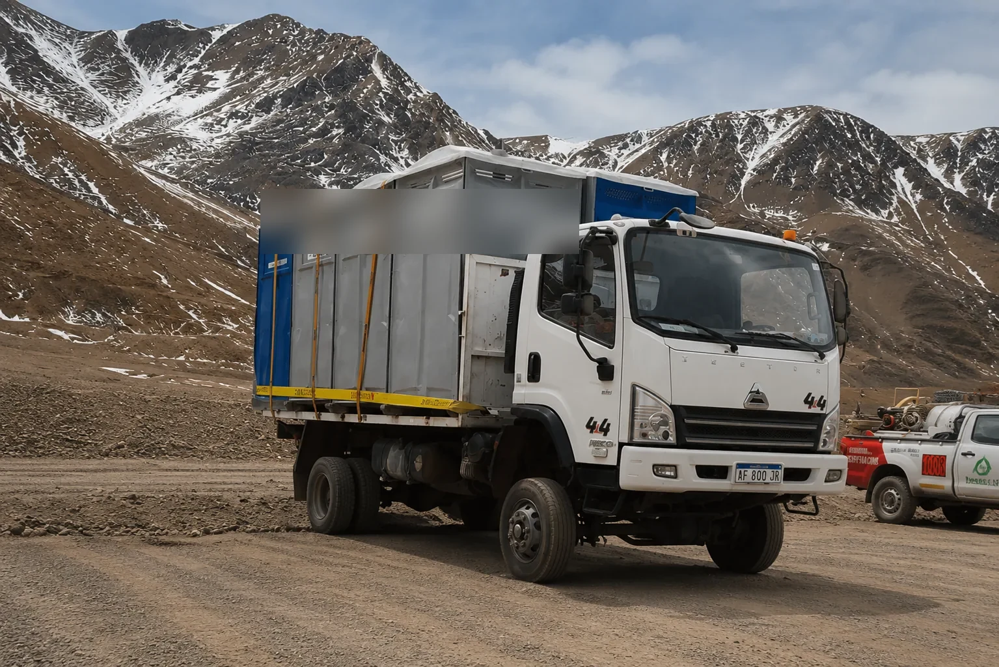

Soporte operativo minero en alta montaña
Un operador presente en el frente, toda la campaña. Coordinamos la logística en terreno, trasladamos al personal y asistimos a los campamentos en los frentes mineros de San Juan, para que tu operación no tenga que resolver cada imprevisto desde cero. Más de 20 años en la Cordillera de los Andes, con bases en Rawson y Calingasta.
En la cordillera, la operación no descansa
Una campaña minera en alta montaña tiene decenas de cosas pasando a la vez: gente que entra y sale del frente, recursos que hay que mover, campamentos que abastecer y movimientos que coordinar en zonas donde no hay nada cerca. Cada una de esas tareas, sin quien las sostenga en terreno, se convierte en una demora.
ISMAEL S.A. acompaña la operación en el frente: coordinamos la logística en campo, trasladamos al personal y asistimos a los campamentos, con flota propia y conocimiento real de las rutas y las condiciones de la cordillera sanjuanina.

Un equipo propio en el frente
No coordinamos la operación desde una oficina a cientos de kilómetros: nuestra gente está en el frente, con la flota, durante la campaña. Esa presencia es lo que permite anticipar los problemas y resolverlos en el momento, no al día siguiente.
Conocemos las rutas, los tiempos y las exigencias de cada operación de altura, porque es donde trabajamos desde hace más de 20 años.
Soporte a la operación, de principio a fin
Acompañamos las necesidades operativas del proyecto en terreno, coordinadas con el ritmo de la campaña.
Coordinación y logística en campo
Planificación de recursos, organización de movimientos y coordinación operativa directamente en el terreno.
Traslado de personal
Movimiento de personal hacia y desde los frentes en camionetas 4×4 preparadas para la alta montaña.
Asistencia a campamentos y faena
Apoyo a las instalaciones de faena y a las necesidades logísticas de los campamentos en operación.
Equipos con o sin operador
Según lo que necesite tu operación: la unidad operada por nuestro personal con experiencia en el frente, o solo el equipo cuando ponés tu propio conductor.

El campamento, listo cuando lo necesitás
Instalar o ampliar un campamento en la cordillera implica mover módulos, coordinar la descarga y ubicarlos donde la faena los necesita. Nuestro equipo asiste esa logística en el lugar, con la flota y la gente para resolverlo en una sola visita.
Sanitarios y módulos, hasta donde el camino lo permita
Baños químicos, módulos y equipamiento de campamento no siempre tienen un camino fácil hasta destino. Con camiones 4x4 propios llevamos ese equipamiento a campamentos en altura, sobre picadas y caminos de montaña donde un camión convencional no llega.

Gente preparada para el frente
El soporte operativo lo sostiene la gente que lo ejecuta. Antes de subir a un frente de altura, nuestro personal cumple un proceso que no se salta por apuro.
Certificaciones OAA
Conductores y operadores acreditados ante entes reconocidos por la OAA, no solo con licencia habilitante.
Control de fatiga
Seguimiento de horas de manejo y descanso del personal, clave en turnos largos de alta montaña.
Inducción a yacimiento
Cada persona que ingresa a un frente pasa por la inducción de seguridad del yacimiento antes de operar.
En el frente, todos los días.
No un proveedor que aparece y se va: un operador presente en terreno durante toda la campaña, que conoce tu operación y responde cuando algo hace falta.
Por qué el soporte lo da un operador sanjuanino
La diferencia entre un operador local y uno de afuera se mide en horas de movilización y en quién está en el frente cuando la operación lo necesita.
Flota propia para abastecer campamentos
Camiones y camionetas propias dedicadas a la logística de campamento. Si una unidad falla, sale otra: el campamento no se queda sin abastecer.
Presencia local en San Juan
Bases en Rawson y Calingasta: movilización en horas, sin depender de operadores de otras provincias.
Personal propio con experiencia en campamento
Conductores y operadores acreditados, con experiencia real en logística de campamentos de altura.
Seguros y habilitaciones al día
ART, responsabilidad civil, seguro de carga y habilitaciones de transporte para la logística de campamento.
+20 años en alta cordillera
Más de 20 años en rutas de montaña, frentes de perforación y proyectos de exploración en San Juan.
Trazabilidad de cada entrega al campamento
Monitoreo GPS de la flota: sabés qué unidad salió y cuándo llegó al campamento.
¿Necesitás soporte operativo para tu campaña?
Contanos la zona de operación, las necesidades del frente y las fechas estimadas. Te respondemos con una propuesta concreta.
Ver todos los servicios →